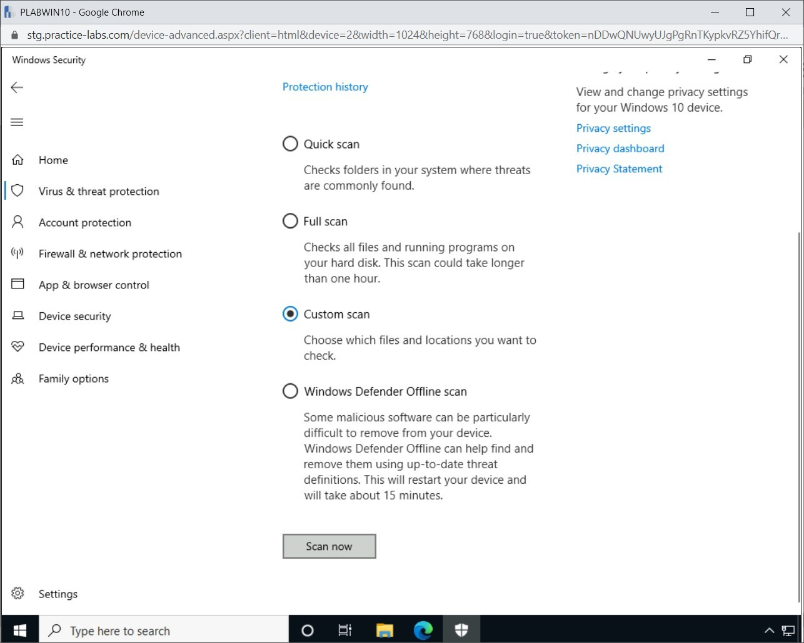
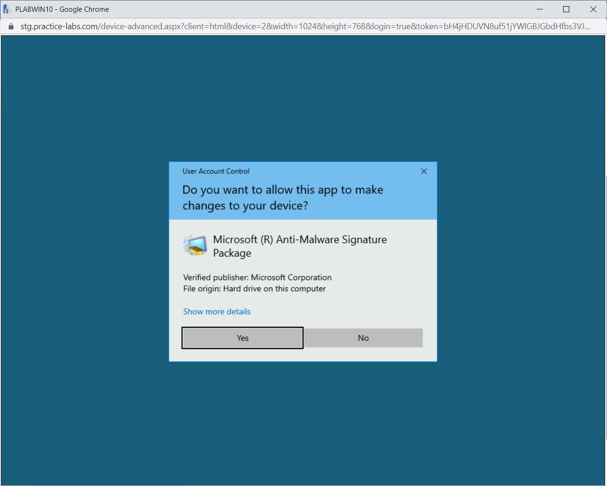
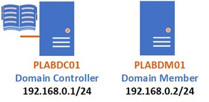
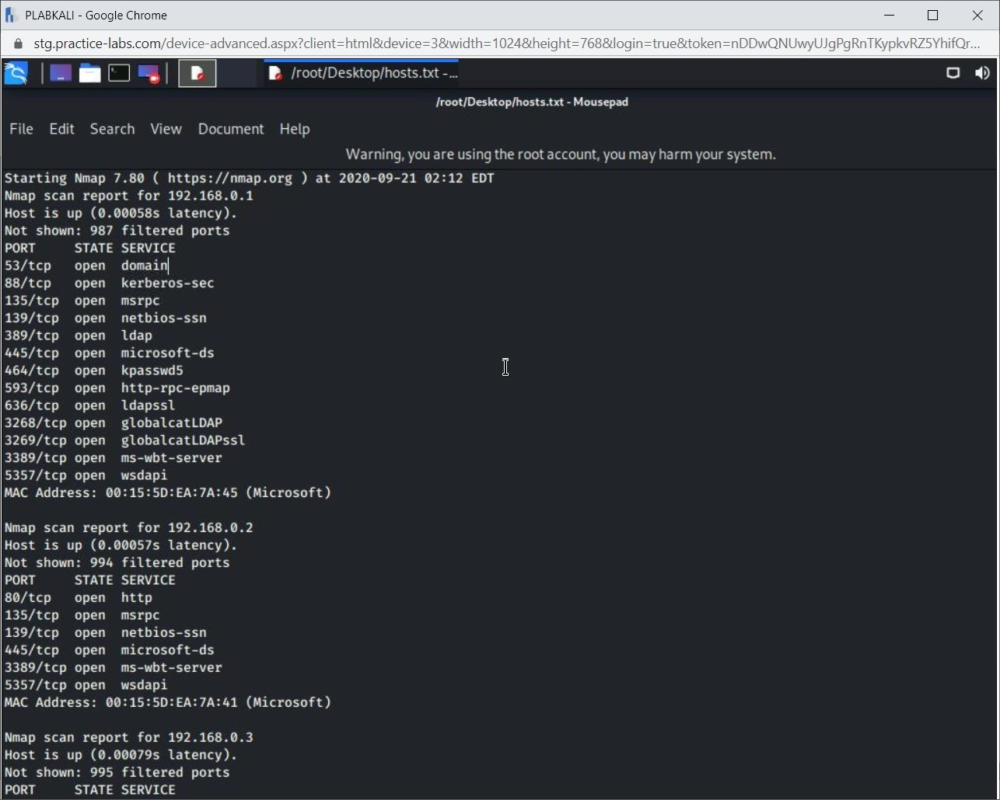
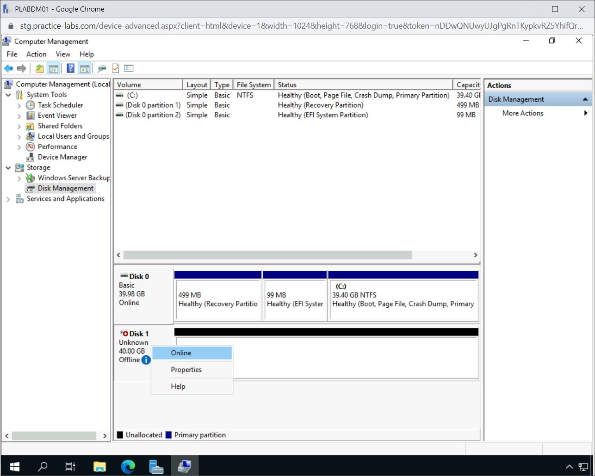
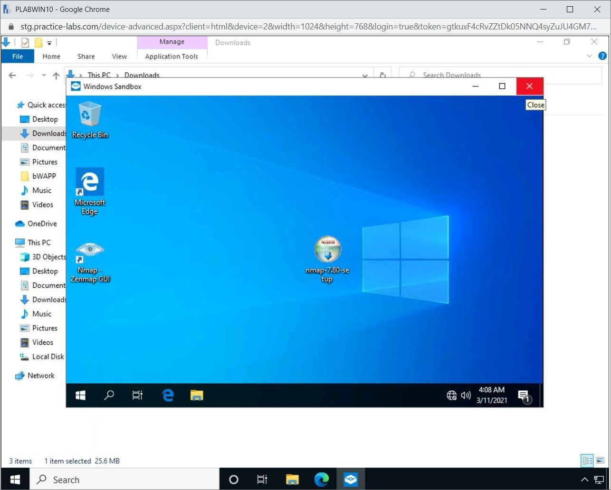

Introduction
bb1840e4-5425-49a3-9d75-477b8f016ff8
Welcome to the Application and Host Hardening Techniques Practice Lab. In this module, you will be provided with the instructions and devices needed to develop your hands-on skills.
dc640c20-9434-45ea-b7c2-6d4d6a196bfc
Learning Outcomes
In this module, you will complete the following exercises:
- Exercise 1 - Endpoint Protection
- Exercise 2 - Boot Integrity
- Exercise 3 - Database
- Exercise 4 - Application Security
- Exercise 5 - Hardening
- Exercise 6 - Sandboxing
After completing this module, you should be able to:
- Use Windows Defender
- Use an Online Anti-Malware Scanner
- Verify and Adjust Windows Defender Firewall
- Using Hashing
- Create an IIS Blacklist
- Using Nmap
- Hardening Hosts With Update Services
- Install and Configure WSUS
- Work with Windows Sandbox
After completing this module, you should have further knowledge of:
- Antivirus and Antimalware
- Endpoint Detection and Response (EDR)
- Host Intrusion Prevention System (HIPS) and Host Intrusion Detection System (HIDS)
- Data Loss Prevention (DLP)
- Next Generation Firewall (NGFW)
- Unified Extensible Firmware Interface (UEFI)
- Self-encrypting Drive (SED)
- Measured Boot and Attestation
- Tokenization
- Salting
- Secure Coding Practices
- Secure Cookies
- Hypertext Transfer Protocol (HTTP) Headers
- Static Code Analysis
Exam Objectives
The following exam objectives are covered in this lab:
3.2 Given a scenario, implement host or application security solutions.
- Endpoint Protection
- Boot Integrity
- Database
- Application Security
- Hardening
- Self-Encrypting Drive (SED)/Full Disk Encryption (FDE)
- Hardware Root of Trust
- Trusted Platform Module (TPM)
- Sandboxing
Note: Our main
focus is to cover the practical, hands-on aspects of the exam
objectives. We recommend referring to course material or a search engine
to research theoretical topics in more detail.
Lab Duration
It will take approximately 1 hour to complete this lab.
c6fa62a3-1a00-4052-8104-258e8cbaa187
Help and Support
For more information on using Practice Labs, please see our Help and Support page. You can also raise a technical support ticket from this page.
Click Next to view the Lab topology used in this module.
d2c53300-f951-45a9-9aa4-3d4ecae69e11
Lab Topology
During your session, you will have access to the following lab configuration.

Depending on the exercises, you may or may not use all
of the devices, but they are shown here in the layout to get an overall
understanding of the topology of the lab.
- PLABDC01 - (Windows Server 2019 - Domain Controller)
- PLABDM01 - (Windows Server 2019 - Domain Member)
- PLABWIN10 - (Windows 10 - Domain Member Workstation)
- PLABKALI - (Kali Linux 2019.4 - Standalone Server)
Click Next to proceed to the first exercise.
<
Home |
README >
CompTIA Security+ Practice Labs
Exercise 1 - Endpoint Protection
Most operating systems have built-in antimalware
programs to safeguard against viruses, unwanted email messages, and
spyware. Some of these can be a waste of time for the user, while some
might lead to system malfunction, resulting in data or business loss. As
new malware is released frequently, it is recommended to keep the
antimalware application updated.
In this exercise, you will implement some of the
recommended practices, such as updating the antimalware application,
using online scanners, and implementing built-in security features.
To get a better understanding of this technology,
please refer to your course material or use your preferred search engine
to research this topic in more detail.
Learning Outcomes
After completing this exercise, you should be able to:
- Use Windows Defender
- Use an Online Anti-Malware Scanner
- Verify and Adjust Windows Defender Firewall
After completing this exercise, you should have further knowledge of:
- Antivirus and Antimalware
- Endpoint Detection and Response (EDR)
- Host Intrusion Prevention System (HIPS) and Host Intrusion Detection System (HIDS)
- Data Loss Prevention (DLP)
- Next Generation Firewall (NGFW)
Your Devices
You will be using the following devices in this lab. Please power these on now.
- PLABDC01 - (Windows Server 2019 - Domain Controller)
- PLABWIN10 - Windows 10 (Domain Member Workstation)

Antivirus and Antimalware
Malware is software designed with a specific
objective or target in mind. They can be designed to conduct an attack
on a larger organization or a specific set of individuals.
Malware can also affect mobile devices, especially if
their critical system security mechanisms have been disabled. Such
systems can be jailbroken or rooted.
Methods attackers use to transmit malware include:
- E-mail Attachments: Malware is transmitted as
a malicious e-mail attachment. When the user clicks the attachment,
malware within the attachment installs itself on the system
- USB drive: When a malware is loaded onto a
USB drive, it normally creates an autorun.inf file. When the user
connects the USB drive to the system, the autorun.inf file is executed,
and the virus is downloaded to the user’s system.
- Websites: A compromised website may deliver a
malicious application to the user’s system. When the user visits the
website, the malicious application is downloaded and installed.
Malware comes in many types, each with its own symptoms and potential damages. Malware is a broad term that can refer to:
- Malicious code
- Trojan horse
- Virus
- Adware
- Spyware
- Worm
- Rootkit
Trojan
Trojan horse is malware that masquerades as a
legitimate application and quietly steals information from a computer
system. The user can unwittingly trigger the trojan application, which
then damages the data and the system.
Worm
A worm is a type of malware that self-replicates and
spreads itself to unpatched systems. They are mostly shared using
E-mail, and once triggered, it continues to replicate and spread itself
from one system to another.
Spyware
When invoked in a user’s system, spyware sits quietly
without alerting the user and gathers information without their
consent. The attacker controlling the spyware captures the information
by logging the keystrokes generated by the user. The attacker can gain
information such as usernames, passwords, and credit card numbers.
Ransomware
Ransomware takes over a computer and denies the user
access. The intruder demands a ransom to restore access. The intent is
to block the user’s access and extract payment.
Rootkit
A rootkit is malware intended to provide intruders
undetected administrative access to a computer. It can also allow the
attacker to control the system remotely. This malware can be installed
by software and third-party application extensions that appear safe.
Most antivirus programs use a rootkit scanner to detect and remove this
type of malware.
Virus
A virus is a subset of malware, which is designed to
cause harm to a system. It can corrupt or even destroy/delete the data
residing on the system. The virus is now considered legacy and is rarely
used these days.
Antivirus vs. Antimalware
An antivirus, as the name suggests, is designed to
remove viruses from a system. It can also eliminate threats, such as
worms and trojans. However, antimalware is an advanced version of
antivirus that can handle the legacy as well as newer threats. It
includes advanced features, such as secure browsing, anti-phishing,
advanced threat protection, and anti-fraud. Vendors of antivirus and
antimalware may add, remove, or even rename some of the features.
Therefore, not every antimalware product has the same set of features. A
vendor may also create different products with differentiating
features. For example, Kaspersky has several products with
differentiating features:
- Essential PC Anti-virus - Anti-virus
- Advanced Security Suite - Internet Security
- Premium Security Suite -Total Security
Though essential to maintain the security of a system, antivirus or antimalware programs have their limitations:
- Antivirus or antimalware programs need to be
constantly updated to keep up with the frequently released new malware.
However, no antivirus or antimalware application can fully keep up with
the speed of malware releases. This is mainly because it could be days
before an antidote patch is created and updated.
- Antivirus or antimalware applications cannot catch
zero-day exploits, which attack an unknown vulnerability in an
application. Antivirus or antimalware has no control over zero-day
exploits.
- Antivirus or antimalware applications can slow down
the system. The more features you turn on within the application, the
more system resources are used.
Endpoint Detection and Response (EDR)
Endpoint detection and response capabilities help
detect, investigate, and respond to advanced threats to the system. It
provides complete visibility of the endpoints. It can detect the threats
as they occur and respond to protect these points. Further, the
captured information is logged on to a central database for further
analysis, detection, investigation, and reporting.
Host Intrusion Prevention System (HIPS) and Host Intrusion Detection System (HIDS)
HIDS and HIPS are installed on systems to detect and prevent malicious activities on the localhost.
HIPS detects and prevents malicious activity or
unauthorized attempts to access the system where it is installed. HIPS
is specific to the local system and is designed to prevent attacks at
the host level. For example, the security administrator at PLAB Inc.
needs to ensure that compromised devices on the network cannot be used
to attack other network devices. The administrator should use HIPS in
this scenario.
HIDS can only detect but not prevent any unauthorized
access attempts to the system where it is installed; for example, it
will log the number of unsuccessful login attempts of a user and raise
an alert.
Data Loss Prevention (DLP)
DLP detects the data movement via e-mail. It also
detects the users who send unencrypted data via e-mail and notifies the
administrator about it. Moreover, it prevents end-users from copying
data from the system onto unapproved mobile devices.
Next Generation Firewall (NGFW)
A firewall is used to allow or deny access to ports
and protocols. A Next-Generation Firewall (NGFW) is an advanced version
of a firewall that can perform the following functions:
- Firewall
- Anti-spam
- Content filtering
- DLP
- Malware scanner
Task 1 - Use Windows Defender
Windows Defender is the built-in antimalware
software in Windows 10. To keep the system safe, you must keep this
software updated with the latest signatures.
In this task, you will update the Windows Defender application. To do this, perform the following steps:
Step 1
Ensure you have powered on the devices mentioned in the introduction to the exercise.
Connect to PLABWIN10.
In the Type here to search text box, type the following:
Windows Security
From the search results, select the Windows Security App.
Figure
1.1 Screenshot of PLABWIN10: Showing Windows Security in the search bar
and the Windows Security App option on the Best match pop-up menu
selected.
Step 2
In the right pane, click Virus & threat protection.
Figure 1.2 Screenshot of PLABWIN10: Displaying the Windows Security window with Virus & threat protection selected.
Step 3
On the Virus & threat protection page, scroll down, if required, to the Virus & threat protection updates section. Notice the number of days since the definitions were last updated.
The older the signature/definition, the more outdated it is, increasing the risk to your computer.
Note: The number of days since the last update may vary in your lab environment.
Before updating the definitions, let’s run a quick scan of the system. To scan your system, scroll up to the Current threats section and click Quick scan.
Figure 1.3 Screenshot of PLABWIN10: Displaying the Virus & threat protection window with the Quick scan button selected.
Step 4
The scanning process starts. This may take a little while to complete.
Note: When you
click Scan now, a Quick scan is initiated by default. You can specify
the scans to be a Full scan or Custom scan. After the scan is complete,
you might see a small result window in the right bottom corner. Click
the right arrow to close it.
Figure 1.4 Screenshot of PLABWIN10: Displaying conducting a quick threat detection scan using the Windows Defender application.
Step 5
After the scan is completed, Notice that the Current threats section now lists details of the latest scan.
Scroll down to the Virus & threat protection updates section and click the Check for updates link.
Figure 1.5 Screenshot of PLABWIN10: Displaying selecting Check for updates in the Windows Security window.
Step 6
On the Protection updates page, click the Check for updates button.
This process will take a few minutes to complete if there are new updates to be downloaded and installed.
Figure 1.6 Screenshot of PLABWIN10: Displaying selecting the Check for updates button in the Windows Security window.
Step 7
Note the timestamp. It is still the same as the
previous update timestamp. This means that no new updates were available
currently.
Click the back arrow to return to the previous page.
Back on the Virus & threat protection page, in the Virus & threat protection settings section, click Manage settings.
Figure 1.7 Screenshot of PLABWIN10: Displaying selecting Manage settings link in the Windows Security window.
Step 8
On the Virus & threat protection Settings window, scroll down to access the Exclusions section.
Click the Add or remove exclusions link.
Figure 1.8 Screenshot of PLABWIN10: Displaying Add or remove exclusions link is selected in the Windows Security window.
Step 9
Click Add an exclusion and then select Folder to exclude a folder from the scan.
Figure
1.9 Screenshot of PLABWIN10: Displaying selecting a folder to be
excluded from a scan in the Exclusions window in the Windows Security
application.
Step 10
In the Select Folder dialog box, expand This PC and then expand Local Disk (C:). Select Managers and click Select Folder.
Figure 1.10 Screenshot of the PLABWIN10: Displaying selecting the folder to be excluded from a virus scan.
Step 11
The User Account Control dialog box is displayed. Click Yes.
Figure 1.11 Screenshot of the PLABWIN10: Displaying selecting Yes in the User Account Control dialog box.
Step 12
The C:\Managers folder is now excluded from the scan.
Click the back arrow in the top left.
Back on the Virus & threat protection settings page, click the back arrow again.
Figure 1.12 Screenshot of PLABWIN10: Displaying the excluded folder is listed in the Windows Security - Exclusions screen.
Step 13
On the Virus & threat protection page, in the Current threats section, click Scan options.
Figure
1.13 Screenshot of PLABWIN10: Displaying Scan options link on the
Windows Security - Virus & threat protection screen is selected.
Step 14
On the Scan Options page, select the Custom scan and click Scan now.
Note: If you need to choose specific files or folders to scan, you can choose the Custom scan option.
Figure
1.14 Screenshot of the PLABWIN10: The Windows Security - Scan options
screen is displayed showing the required selection performed, and the
Scan now button highlighted.
Step 15
The Select Folder dialog box is displayed.
In the left pane, expand Local Disk (C:) and select Managers.
Click Select Folder.
Figure
1.15 Screenshot of PLABWIN10: The Select Folder dialog box is
displayed, showing the required folder selected and the Select Folder
button highlighted.
Step 16
Notice that the scan status states 0 files scanned. This is because the Managers folder selected for scanning is marked as an exclusion. Therefore, it is skipped from scanning here.
A notification regarding exclusion appears at the bottom of the screen.
Click the Close icon at the top-right corner to close the Scan options window.
Figure
1.16 Screenshot of PLABWIN10: Items skipped during scan notification is
displayed on the Windows Security - Scan options screen.
Task 2 - Use an Online Anti-Malware Scanner
In addition to antimalware programs installed locally
on a computer, you can use free online anti-virus scanners to check
your system for suspicious activity.
In this task, you will download the Microsoft Safety Scanner and use it to scan the system.
Note: The
webpage appearance may change, and URL links may become outdated. You
can use your search engine to find out other online antimalware scanners
if necessary.
Step 1
Ensure you are connected to PLABWIN10.
Click the Microsoft Edge icon on the taskbar.
Figure 1.17 Screenshot of PLABWIN10: Displaying opening Microsoft Edge from the taskbar.
Step 2
The Microsoft Edge window is displayed.
In the address bar, type the following URL:
https://www.microsoft.com/security/scanner/
Press Enter.
Note: If the URL indicated above does not work, use your search engine to search for Microsoft online safety and security center.
Figure 1.18 Screenshot of the PLABWIN10: Displaying browsing to the URL in the Microsoft Edge web browser.
Step 3
The Microsoft Safety Scanner Webpage is displayed.
Click Download Microsoft Safety Scanner (64-bit).
Note: Most
websites are updated regularly. There is a possibility that the website
look and feel does not exactly match the screenshot below.
Figure 1.19 Screenshot of PLABWIN10: Required download option on the Microsoft Safety Scanner webpage is selected.
Step 4
After the file is downloaded, click Open file.
Figure 1.20 Screenshot of PLABWIN10: Displaying opening the downloaded file in the Microsoft Edge browser.
Step 5
The User Account Control dialog box is displayed. Click Yes to continue.
Figure 1.21 Screenshot of PLABWIN10: Displaying selecting Yes in the User Account Control dialog box.
Step 6
The End User License Agreement page appears.
Select the Accept all terms of the preceding license agreement and click Next.
Figure
1.22 Screenshot of PLABWIN10: Displaying accepting the End user license
agreement and selecting Next in the Microsoft Security Scanner
installation wizard window.
Step 7
The Microsoft Safety Scanner wizard is displayed.
On the Welcome to the Microsoft Safety Scanner page, click Next.
Figure 1.23 Screenshot of PLABWIN10: Displaying the Microsoft Safety Scanner wizard selecting the Next button.
Step 8
On the Scan Type page, keep the default selection - Quick scan - and click Next.
Figure
1.24 Screenshot of PLABWIN10: Displaying the Scan type page in the
Microsoft Safety Scanner wizard with the Quick Scan option selected.
Step 9
On the Scanning your computer page, the scanning progress is displayed.
This will take around 2-3 minutes to complete.
Figure 1.25 Screenshot of PLABWIN10: Displaying conducting a quick scan using the Microsoft Safety scanner application.
Step 10
After the scan is completed, on the Scan results page, view the results.
Click Finish when done.
Close the Microsoft Edge window.
Figure 1.26 Screenshot of PLABWIN10: Displaying the scan has been completed and closing the Microsoft Safety Scanner application
Task 3 - Verify and Adjust Windows Defender Firewall
In this task, you will first verify that the Windows
Defender firewall is activated. Then you will make a change to the rules
within the firewall that govern the kind of traffic that can pass
through.
Since we consider endpoint protection here, you will perform this task on the desktop machine rather than one of the servers.
Step 1
Ensure that the required devices are powered on. Connect to PLABWIN10.
In the Type here to search field within the taskbar, type:
Firewall
Select the Windows Defender Firewall option on the search results.
 Figure
1.27 Screenshot of PLABWIN10: Showing Firewall in the search bar and
the Windows Defender Firewall option on the Best match pop-up menu is
selected.
Figure
1.27 Screenshot of PLABWIN10: Showing Firewall in the search bar and
the Windows Defender Firewall option on the Best match pop-up menu is
selected.
Step 2
When the Window Defender Firewall screen appears, click the Advanced settings link.
Figure 1.28 Screenshot of PLABWIN10: Displaying the Advanced Settings link in the Windows Defender Firewall window is selected.
Step 3
Click on the Inbound Rules option on the left side menu.
This loads a list of pre-installed Inbound rules in the middle pane.
Scroll through the list of rules.
Figure
1.29 Screenshot of PLABWIN10: Displaying Inbound Rules are listed on
the middle pane of Windows Defender Firewall with Advanced Security
window.
Step 4
The Windows Defender Firewall rules can be
configured to apply only to specific computers, user accounts, programs,
services, port numbers, protocols, or even network adapters.
Find the column labeled Local Port. Click on it to sort the rules by Local Port Number. This makes it much easier to locate rules that apply to a certain port.
Here you want to look at any rules that apply to Port 80. This port is typically used for allowing access to a web server.
Figure
1.30 Screenshot of PLABWIN10: Displaying Inbound Rules sorted by the
port number in the Windows Defender Firewall with Advanced Security
window.
Step 5
Highlight the first rule that applies to port 80 - BranchCache Content Retrieval (HTTP-In) - and scroll to the left. Look at the columns labeled Enabled and Action.
This first rule allows traffic in through port 80,
but there is no effect since it is disabled. The firewall does not
consider this rule.
This has a similar effect to enabling the rule and setting the Action to Block. This is because firewalls are set to block any traffic source that does not have a rule specifically allowing it.
Figure
1.31 Screenshot of PLABWIN10: Displaying the required inbound rule in
the middle pane of Windows Defender Firewall with Advanced Security
window is selected.
Step 6
Double-click on the BranchCache Content Retrieval (HTTP-In) rule. The relevant dialog box is displayed.
On the General tab, select the Enabled checkbox and leave the radio button set to Allow the connection.
Click OK.
Figure
1.32 Screenshot of PLABWIN10: Displaying the General tab on the
BranchCache Content Retrieval (HTTP-In) Properties dialog box showing
the required settings performed and the OK button is selected.
a5adbee1-b3d4-422f-907b-2999d763f275
Step 7
You have saved your rule change, and inbound traffic would now be allowed on port 80. Notice that this rule is now activated.
Opening port 80 would be something you would
do if you activated the IIS web server established a binding to port 80,
which is the default. If you were utilizing TLS or SSL to encrypt web traffic, you would use port 443 instead.
There are versions of IIS designed to run on a
desktop machine rather than a server, and they can be useful in the
development and testing of web applications. Setting the host-based
firewall to allow inbound traffic on port 80 is not unusual.
Figure
1.33 Screenshot of PLABWIN10: Displaying Updated inbound rule in the
middle pane of Windows Defender Firewall with Advanced Security window
is selected.
Close the Windows Defender Firewall with Advanced Security window.
Close the Windows Defender Firewall window.
<
Home |
README >
CompTIA Security+ Practice Labs
Exercise 2 - Boot Integrity
A hardware root of trust ensures secure operations on
a system. The root of trust is implemented on the hardware and,
therefore, cannot be tampered with. In a normal scenario, a system is
prone to malware and other types of attacks, and if the encryption keys
are stored on the system, they can be easily stolen. However, the root
of trust is immune to a malware attack. Moreover, with the root of trust
enforced, the booting process of a system is considered to be genuine,
with any applications running on it.
Therefore, root of trust ensures secure operations by:
- storing encryption keys securely
- enabling a secure boot process
The root of trust can be implemented in two different ways on a system:
- a stand-alone security module
- a security module embedded within a processor or a system on chip (SoC)
There are two types of hardware root of trust:
- Fixed function: designed to perform a
specific function, such as data encryption. Other functions it can
perform is key management and certificate validation. However, other
than the defined functions, it cannot perform any other functions.
- Programmable: is designed to perform complex tasks and functions. It is possible to upgrade a programmable root of trust.
A root of trust can be applied using:
- A private cryptographic key
- Physically Unclonable Function (PUF)
A hardware security module (HSM) is a
security device that is used for safeguarding and managing digital keys,
which are used for strong authentication. HSM can be in the form of a
plug-in card or an external device.
The following are the functions of an HSM:
- Performing encryption and decryption
- Manage secure key generation
- Perform secure key storage
- Manage Transparent Data Encryption (TDE) keys for databases
The Following cryptographic algorithms are supported with microSD HSM:
- AES
- RSA
- SHA-1
- Triple DES
- Diffie-Hellman Key Exchange
Other than these cryptographic algorithms, SHA-256 is also supported by HSM.
Let’s take the example of a Webserver that you have.
The Web server is configured to run a Website with a certificate. You
notice that after the certificate configuration, the Web server has
slowed down. You want the Web server to give good performance while
using the certificate, and at the same time, you also want to protect
its private key.
HSM can meet both the requirements mentioned in the
scenario. HSM increases the performance of the Web server by offloading
the cryptographic functions. Moreover, HSM stores the private key. There
are different varieties available, such as USB and PCIe cards.
Motherboards of the modern systems include a chip
that is known as a Trusted Platform Module (TPM), which provides a
hardware root of trust for secure computing. When a system has TPM, you
can configure it by accessing BIOS within the system. A TPM can perform
various functions, such as:
- Storage of encryption keys
- Management of encryption keys
- Perform encryption and decryption process
- Storage of certificates
- Storage of passwords
You can configure TPM to perform full disk encryption
(FDE). However, for TPM to perform FDE, you need to ensure TPM, after
which it becomes the root of trust. Once it becomes the root of trust,
the hard drive is locked with the encryption keys, which means that it
cannot be simply taken out and plugged into another system for data
retrieval. When you enable TPM in a system, it performs a complete
system check and verifies the systems’ integrity. Further, it ensures
the integrity of the entire boot process within a system.
The concept of the root of trust is formed by the use
of TPM, which ensures that the hardware cannot be either tampered with
or replicated. For example, someone cannot just replicate a particular
motherboard to break the encryption applied through TPM.
In this exercise, you will learn about Unified
Extensible Firmware Interface (UEFI), Self-encrypting Drives (SED),
Measured Boot and Attestation.
Learning Outcomes
After completing this exercise, you should have further knowledge of:
- Unified Extensible Firmware Interface (UEFI)
- Self-encrypting Drive (SED)
- Measured Boot and Attestation
Your Devices
This exercise contains materials for Security+.
Unified Extensible Firmware Interface (UEFI)
Legacy systems supported a BIOS interface. In modern
systems BIOS has been replaced by Unified Extensible Firmware Interface
(UEFI). UEFI is a new boot environment to boot the operating system.
UEFI that can exist within the firmware of a system, or it can also be
put on top of BIOS, if required. To enable UEFI on a system, you need at
least Windows 8. UEFI environment settings are secured by an admin
password.
The process of booting the system for the user
remains the same. However, the internal working of the booting differs
in the case of the UEFI. When a system boots, it goes through UEFI,
which lets the operating system boot.
There are two methods of checking if the system is running UEFI:
- In the first method, you need to check if there is
/sys/firmware/efi directory on your system. If it is present, then UEFI
is present on the system.
- In the second method, you can install and then run
efibootmgr. After running, if it returns variables, then this means that
UEFI is running on the system.
The UEFI uses firmware drivers, which are also known as Option ROMs.
As stated earlier, the /sys/firmware/efi directory
stores the UEFI. This directory can be present in non-volatile memory, a
hard drive, or even a network location.
When you are using UEFI boot and have Secure Boot
enabled, the boot image must be signed by Microsoft or a third-party
certificate authority whose images can be accepted by UEFI. If you
attempt to use an unsigned image with the Secure Boot, it will not list
the image in the boot menu. Therefore, you will not be able to install
the operating system from a DVD or by any other means, such as copying
the installation files from a USB. Moreover, you need to configure UEFI
to trust your custom bootloader.
Self-Encrypting Drive (SED)
A SED is a type of hard drive that can encrypt and
decrypt the data on its own without user intervention. As a process, the
data is encrypted automatically when it is written to the disk. When
the user attempts to retrieve the data, the data is first decrypted and
shown to the user.
While configuring a SED, you create a password, which
is later used to decrypt the hard drive during the boot up process.
Without the password, the hard drive does not boot. Only after
successful verification of the password, the drive is decrypted, and the
user can access it.
SED is encrypted using a Data Encryption Key (DEK) where a single key is used to encrypt and decrypt the hard drive.
Hardware manufacturers have started to develop
hardware devices according to the Opal Storage standard specification,
which was developed by Trusted Computing Group (TCG). This standard is
an upgrade to the previously used SED standard.
Full Disk Encryption (FDE)
Full disk Encryption is the process of encrypting all
the data on the drive. If the drive falls in to the wrong hands it will
not be possible to retrieve any data from the drive as the decryption
keys will not be available to decrypt the drive and access the data.
Measured Boot and Attestation
Just like the secure boot, Measured Boot Chain also
works with the Root of Trust. The entire process of the startup of a
system is validated with the Root of Trust. A chain is defined for the
bootup process such that the current object calculates the hash of the
next object and stores it safely. It starts with the Root of Trust, and
then the next object in the chain is computing its own hash. In case of
Measured Boot, the hashes are stored in the TPM, the Trusted Platform
Module.
When a system boots, each object’s hash is compared with the hashes stored in TPM. If every hash meets, the system boots up.
The hashes can be reported to a management station, known as Attestation.
7429868b-128c-4069-95a9-7246a6a9e5a3
<
Home |
README >
CompTIA Security+ Practice Labs
Exercise 3 - Database
With the rising trend of data-harvesting, databases
are now a mainstay of any current system. However, if the information is
not stored in a proper format and is not safeguarded, databases can be
prone to several types of attacks.
In this exercise, you will learn about various methods to secure information in a database.
Learning Outcomes
After completing this exercise, you should be able to:
After completing this exercise, you should have further knowledge of:
Your Devices
You will be using the following devices in this lab. Please power these on now.
- PLABDC01 - (Windows Server 2019 - Domain Controller)
- PLABWIN10 - Windows 10 (Domain Member Workstation)

Tokenization
Tokenization is a method of replacing the actual
string of data with unique identification symbols or numbers. This way,
if anyone gets hold of the string of text, they cannot decipher it.
Tokenization is used to secure highly sensitive data, such as credit
card numbers.
Tokenization is implemented in the following cases:
- Bank transactions
- Medical records
- Criminal records
- Vehicle driver information
- Loan applications
- Stock trading
Salting
Salting increases the length of the passwords by
adding more bits to it, making it difficult to guess the real password.
In fact, this is a way of cryptography.
Salting protects the passwords stored in a database from attacks, such as:
- Dictionary
- Brute-force
- Rainbow table
Task 1 - Use Hashing
If you want to verify a source file is not corrupted,
you can compare the file’s new hash value to the previously generated
hash value. If the new hash value and the previously generated values
are different, it means that the source file has been tampered with and
has lost its integrity.
Here we will apply the same tool to see hash results.
Step 1
Ensure you have powered on the devices mentioned in the introduction to the exercise.
Connect to PLABWIN10.
Click the Start charm, navigate to the Cryptography Demonstration and click on the CrytoDemo1.0 program to start.
Figure 3.1 Screenshot of PLABWIN10: CryptoDemo option on the Start menu is selected.
Step 2
The CryptoDemo window is displayed.
Notice that the Encryption tab is displayed by default.
Click the Hashing tab.
Figure 3.2 Screenshot of PLABWIN10: Encryption tab on the CryptoDemo dialog box is displayed listing default settings.
Step 3
Notice the Hash Algorithm is set to MD5, which is a very common hash type.
Figure 3.3 Screenshot of PLABWIN10: Hashing tab on the CryptoDemo dialog box is displayed listing default settings.
Step 4
On the top pane, type the following:
Congratulations, you are learning how hashing works.
Click Get Hash.
Notice the hash value is displayed in the lower pane.
Figure
3.4 Screenshot of PLABWIN10: Hashing tab on the CryptoDemo dialog box
is displayed showing the required text typed-in and listing the
calculated hash value.
Step 5
From the drop-down menu of the Hash Algorithm, click on one of the other types, such as SHA1 and then click Get Hash.
You will now see a different result for each algorithm.
Figure
3.5 Screenshot of PLABWIN10: Hashing tab on the CryptoDemo dialog box
is displayed showing the required settings performed and listing the
calculated hash value.
a5adbee1-b3d4-422f-907b-2999d763f275
<
Home |
README >
CompTIA Security+ Practice Labs
Exercise 4 - Application Security
Application developers need to ensure that they avoid
introducing bugs and vulnerabilities that attract hackers. Methods
recommended to achieve this security include:
- Secure coding practices
- Secure cookies
- HTTP headers
- Code signing
- Whitelisting
- Blacklisting
- Static code analysis
In this exercise, you will learn about application security.
Learning Outcomes
After completing this exercise, you should be able to:
After completing this exercise, you should have further knowledge of:
- Secure Coding Practices
- Secure Cookies
- Hypertext Transfer Protocol (HTTP) Headers
- Static Code Analysis
Your Devices
You will be using the following devices in this lab. Please power these on now.
- PLABDC01 - (Windows Server 2019 - Domain Controller)
- PLABDM01 - Windows Server 2019 (Domain Member Server)

Secure Coding Practices
Secure coding practices help ensure application
security. These practices are based on safeguarding against following
identified points of vulnerability:
- Invalid data Input
- Hard-code credentials
- Data in Cleartext format
- Source code comments
- Verbose errors
- Lack of error handling
- Lack of code signing
- Managing race conditions
Input Validation
Input validation is the first line of defense in any
application. Input validation should validate the input data before it
is submitted to the application. For example, input validation must
check that the mobile number input by a user is numeric and has the
requisite number of digits. Similarly, introducing the Range column in a
form is another type of input validation. This will not allow an
attacker to enter malicious jargon into an application.
Input validation is a basic requirement while
developing any type of application. However, ignoring input validation
is the most common mistake committed by developers. The input validation
is usually performed at the client-end.
Lack of input validation makes the application vulnerable to:
- Interpreter Injection
- SQL Injection
- Null Byte Injection
- Scripting attacks
- Locale/Unicode attacks
- File system attacks
- Buffer overflows
- Uncontrolled format string
- Directory traversal
Hard-code Credentials
Hard-coded credentials are often stored within the
application. Developers can use these hard-coded credentials to gain
access to the application that might lock out due to some reason. The
hard-code credentials are referred to as a backdoor, which, if found by
an attacker, can compromise the entire application and its data.
The hard-coded credentials can be:
- Inbound: Used for accessing a Web
application. The credentials can be recovered by accessing the source
code or through a brute-force attack.
- Outbound: Used for accessing the back-end
database. These credentials are stored in the database in plain-text
format. In case an attacker gains control of the application, the
credentials can be retrieved from the database.
Data in Cleartext Format
Many Web applications allow data transmission in
cleartext format, which is vulnerable to sniffing or Man-In-The-Middle
attack. Data in the cleartext format can be stolen from the following
points:
- Client Web browser
- In transit
- Server
The developers typically use the HTTP, SMTP, and FTP
protocols, which do not offer any kind of encryption. These must be
safeguarded by applying a strong encryption algorithm.
As a rule, no confidential data must be stored or
transmitted without encryption. Moreover, it is important to ensure that
the encryption is up-to-date and uses strong standard algorithms.
Source Code Comments
Developers are always told to comment their code.
However, this practice often leads to an application compromise. The
developers tend to leave sensitive information, such as security details
or design workflows in the comments. This helps an attacker gain
direction in exploiting the weaknesses of the application, especially
when the comments are available in a live Web application.
In a live Web application, you should remove all
comments so that there is no hint for the attacker. You should retain
the comments in the archived version, which can be used for reference
while updating or troubleshooting the application.
Verbose Errors
There can be various application errors, such as
- Out of memory
- Null pointer exceptions
- System call failure
- Database unavailable
- Network timeout
- Application timeout
Verbose error messages can reveal sensitive details
about the application. When error messages provide more than
need-to-know information, the attacker can get hints about the potential
vulnerabilities within the application. For example, the error message
can reveal the database table names, application code structure, or even
query logic.
Moreover, a verbose error message does not help the
user in any way. The developers should display concise meaningful error
messages that could be understood by the users.
Lack of Error Handling
Lack of error handling in an application can lead to
issues, such as invalid input committed to the application, data
corruption, or crashing the application. For example, the Age field in
an application should accept input from 1 to 99. There should be an
input validation on the field. If anyone enters 100, then an error
should be displayed.
However, beyond the input handling, there should be
an error-handling code to handle any unexpected error that may arise.
After the input validation, error handling should be used as a second
line of defense that prevents a malicious input from exploiting the
application by triggering an error condition.
Code Signing
Developers use cryptography to digitally sign their
code with a private key. When the user runs the code, the Web browser
uses the developer’s public key to verify the signature. A verified
signature ensures that the code is authentic and has not been tempered.
An unsigned code can be corrupted or tempered with, and then delivered
to the users undetected.
Therefore, signing a code ensures:
- Authenticity of the code: Digital signature
provides a measurable proof of authenticity of the code. Moreover, it is
a method of comparing the malicious version with the authentic code.
When running an unsigned code, the Web browsers warn the users by
displaying the “unknown publisher” error.
- Integrity of the code: Code signing helps
confirm integrity of the code. Any modification, whether intentional or
unintentional, to a signed code makes the signature invalid.
Race Condition
Each system or application is designed such that
certain events must occur in a sequence. In some cases, the system might
attempt to perform two or more operations at the same time. This is
called the race condition.
The simplest example of a race condition can be two
threads in an application that attempt to change the same data
simultaneously. Both the threads race to access the data. In such a
situation, an attacker can take advantage of the time gap between when
the service is triggered and when a security control uses thread control
to block the situation. Thread block can impact performance of the
system or the application.
One method to prevent race condition is serializing
the access to memory or storage. Assume that there are two commands,
read and write, that are executed together. You can serialize them by
making the read command go first by default and write command later.
Hidden Elements - Sensitive Information in the DOM
Developers often use hidden elements on a form. These
elements contain information that is usually not relevant to the users
but is required by the systems for the desired operation. For example,
developers might use the hidden field to pass authentication information
to the Web server.
Another reason for using the hidden element is to
maintain state information. You may not want to display the state
information on a webpage and therefore, you can hide it using a hidden
element. For example, you may want to hide the session state in a
variable so that it can be referred to later on.
Even though these fields are hidden from the users, they can be viewed by viewing the source of the webpage.
Just like the users, an attacker can submit forms to
the server. The attacker might submit unexpected values to the server
using the hidden fields. This way, the attacker might end up gaining
unauthorized entry into the server. If the fields to maintain state are
accessed by an attacker, it can lead to a hijack session attack.
Secure Cookies
A cookie is a piece of information sent by a
webserver to a user’s browser when the user connects to the website. The
cookie helps the webserver maintain session information with the
browser. Some of the examples of cookie usage include logins to a
Website, shopping cart information, and the game scores of an online
game.
A cookie sent over an unsecured channel can be
tampered by an attacker. To resolve this problem, a secure cookie can be
used. A secure cookie is an HTTP cookie with a secure attribute set. A
secure cookie can be sent over a secure channel only, such as HTTPS.
Hypertext Transfer Protocol (HTTP) Headers
HTTP headers are used for sharing additional
information along with the requests and responses that are passed
between a webserver and a client.
Some of the commonly used groups of HTTP headers are:
- Connection
- Keep-Alive
- Proxy-Authenticate
- Proxy-Authorization
- TE
- Trailer
- Transfer-Encoding
Task 1 - Install an IIS Blacklist
In this task, you will install an IIS feature called
Domain and IP Restrictions that lets you prohibit access from certain IP
numbers and IP ranges.
Step 1
Ensure you have powered on the devices mentioned in the introduction to the exercise.
Connect to PLABDM01.
The Server Manager Dashboard starts automatically.
Click Add roles and features.
Figure 4.1 Screenshot of PLABDM01: Add roles and features option on the Server Manager Dashboard is selected.
Step 2
The Add roles and features wizard appears.
Read through the Before you begin screen and click Next.
Figure
4.2 Screenshot of PLABDM01: Before you begin page on the Add Roles and
Features Wizard is displayed showing the Next button highlighted.
Step 3
The Select installation type screen displays.
Verify that the Role-based or feature-based installation radio button is selected.
Click Next.
Figure
4.3 Screenshot of PLABDM01: Select installation type page on the Add
Roles and Features Wizard is displayed showing the required selection
performed and the Next button highlighted.
Step 4
The Select Destination Server screen displays. Verify that the PLABDM01 server is highlighted.
Click Next.
Figure
4.4 Screenshot of PLABDM01: Select destination server page on the Add
Roles and Features Wizard is displayed showing the required selection
performed and the Next button highlighted.
Step 5
The Select server roles screen displays. In the center of the screen, a scrollable list of features displays, with expandable feature groups listed.
Scroll down to Web Server (IIS) and expand the list. Click on Web Server (IIS), then Web Server, then Security, and then IP and Domain Restrictions.
Select IP and Domain Restrictions and click Next.
Figure
4.5 Screenshot of PLABDM01: Select server roles page on the Add Roles
and Features Wizard is displayed showing the required selections
performed and the Next button highlighted.
Step 6
When the Select features screen displays to show the features list box, keep the default selection and click Next.
Figure
4.6 Screenshot of PLABDM01: Select features page on the Add Roles and
Features Wizard is displayed listing default selection and showing the
Next button highlighted.
Step 7
The Confirm installation selections screen displays.
This screen lists the specifications for installation.
Click Install.
Figure
4.7 Screenshot of PLABDM01: Confirm installation selections page on the
Add Roles and Features Wizard is displayed listing the installation
specifications and showing the Install button highlighted.
Step 8
A progress bar traces the installation.
Figure
4.8 Screenshot of PLABDM01: Installation progress page on the Add Roles
and Features Wizard is displayed showing a progress bar on the
installation.
Step 9
When you see the Installation Succeeded message, click the Close button.
You will be navigated back to the Server Manager Dashboard.
Figure
4.9 Screenshot of PLABDM01: Installation progress page on the Add Roles
and Features Wizard is displayed showing the installation complete and
the Close button highlighted.
Task 2 - Configure an IIS Blacklist
After installing the IIS on your server, add a Deny entry
to the installed IIS. This entry creates a blacklist, denying access to
a range of IP numbers. In this task, you will use the IP and Domain Restrictions feature you just installed to prevent a certain domain or IP numbers from accessing the web site.
Step 1
Connect to PLABDM01 and ensure that the Server Manager window is displayed.
Click on the IIS menu option on the navigation pane at the left.
Figure 4.10 Screenshot of PLABDM01: IIS option on the Server Manager Dashboard is highlighted.
Step 2
On the Servers pane of the Server Manager > IIS screen, notice that the PLABDM01 is highlighted by default.
Right-click PLABDM01 and select Internet Information Services (IIS) Manager.
Figure
4.11 Screenshot of PLABDM01: Context menu (that appears on
right-clicking a listed server) > Internet Information Services (IIS)
Manager menu-options on the Server Manager IIS screen are highlighted.
Step 3
The IIS Manager screen loads.
Expand the PLABDM01 (PRACTICELABS\Administrator) Sites node and select Default Web Site.
Middle pane now lists icons representing the settings and options on this site.
Double-click the IP Address and Domain restrictions icon
 Figure
4.12 Screenshot of PLABDM01: Required icon on the Default Web Site Home
pane on the Internet Information Services (IIS) Manager is highlighted.
Figure
4.12 Screenshot of PLABDM01: Required icon on the Default Web Site Home
pane on the Internet Information Services (IIS) Manager is highlighted.
Step 4
You can see that there are currently no IP Address and Domain restrictions specified for the Default Web Site.
In the menu under the Actions pane on the right side, click Add Deny Entry.
Figure
4.13 Screenshot of PLABDM01: Add Deny Entry option on the Actions pane
of the Internet Information (IIS) Manager is highlighted.
Step 5
The Add Deny Restriction Rule dialog box appears.
In the IP address range text box, type the following:
24.73.166.0
In the Mask or Profile text box, type the following:
255.255.255.0
The Mask field is a Subnet Mask that defines the range of IP numbers starting with the number just entered.
Therefore, this rule tells IIS to block requests from IP numbers in the range 24.73.166.0 to 24.73.166.255.
Click OK.
Figure
4.14 Screenshot of PLABDM01: Add Deny Restriction Rule dialog box is
displayed showing the required settings performed and the OK button
highlighted.
89702e5d-d25a-44d4-b0df-b081bb2e2dbd
Step 6
IP Address and Domain Restrictions screen is displayed.
Notice the Deny entry just created. This is called Blacklisting.
You can create more Deny entries over time, as you identify IP ranges to exclude from the Default Web Site.
Similarly, you can create Allow entries, specifying the IP numbers allowed to access the site. This blocks access to all the other IP addresses. This is called Whitelisting.
Whitelisting is useful when only a few, well-known computers with fixed IP numbers, or within a fixed range, are to access the site.
Close the IIS Manager window and the Server Manager window.
Figure 4.15 Screenshot of PLABDM01: Newly created restriction rule is listed on the Internet Information Services (IIS) Manager.
Software Assurance
Several tests are performed on the software being
developed to ensure a secure software product. This is the software
assurance process. Software tools used in the process include:
- FindBugs: Used for static analysis of Java code
- Peach: Is a fuzzing tool that can generate
artificial input to test a software. Fuzzing is a type of black box
testing that is performed using Fuzzer. It tests the application for
crashes, failing built-in code assertions, and memory leaks.
- SonarQube: Is an open-source tool for performing a static code analysis with several pre-defined rules.
- Yet Another Source Code Analyzer (YASCA): Is
an open-source tool that can test software for vulnerabilities and code
quality. It can also test for performance and adherence to best
practices.
You can either perform static code analysis or dynamic code analysis to detect bugs and vulnerabilities in a code.
Static code analysis is a method of finding the
vulnerabilities and flaws in the source code before it is compiled into
an application. Reviews can be manual or automated tool-based. On the
other hand, the dynamic code analysis is performed after the code is
compiled and the application is executed.
<
Home |
README >
CompTIA Security+ Practice Labs
Exercise 5 - Hardening
Application hardening is based on a strong design and
adhering to secure coding practices, such as input validation,
encryption, and data handling. Another practice to harden the
applications is keeping test systems and live systems separate via
sandboxing.
On the other hand, hardening the operating system and
other system components depends on patches, security updates, and bug
fixes. These patches are the latest updates released by the vendor to
minimize or eliminate the evolving vulnerabilities.
There is no single method of hardening a host. You
must harden various components in a host. For example, you must harden
the operating system and close any open ports.
In this exercise, you will learn to harden a host.
Learning Outcomes
After completing this exercise, you should be able to:
- Identify open ports and OS details
- Hardening Hosts With Update Services
- Install and Configure WSUS
Your Devices
You will be using the following devices in this lab. Please power these on now.
- PLABDC01 - (Windows Server 2019 - Domain Controller)
- PLABDM01 - Windows Server 2019 (Domain Member Server)
- PLABKALI - Kali 2019.4 (Stand-alone device)
Task 1 - Identify Open Ports and OS Details
Nmap is a tool to find live hosts, scan for open
ports across one or more systems, or perform various tasks, such as
operating system (OS) detection. In this task, you will find the open
ports and details of the OS on the 192.168.0.0/24 IP range, where the lab devices are connected.
To start using nmap scanner, perform the following steps:
Step 1
Ensure you have powered on the devices mentioned in the introduction to the exercise.
Connect to PLABKALI.
In the Enter your username text box, type the following:
root
In the Enter your password text box, type the following:
Passw0rd
Click Log In or press Enter.
 Figure 5.1 Screenshot of PLABKALI: Required login credentials are typed into the login screen.
Figure 5.1 Screenshot of PLABKALI: Required login credentials are typed into the login screen.
Step 2
On the desktop, right-click and select Open Terminal Here.
 Figure
5.2 Screenshot of PLABKALI: Context menu (that appears on
right-clicking on the desktop) > Open Terminal Here menu-options are
selected.
Figure
5.2 Screenshot of PLABKALI: Context menu (that appears on
right-clicking on the desktop) > Open Terminal Here menu-options are
selected.
Step 3
To find hosts and their open ports, type the following command on the terminal window:
nmap 192.168.0.0/24 > hosts.txt
Press Enter.
Note: This command will save the results in a file called hosts.txt.
Figure
5.3 Screenshot of PLABKALI: Terminal window is displayed showing the
nmap command to identify the hosts and their open ports and to save the
results in the specified file typed-in.
Step 4
When nmap is finished scanning the network 192.168.27.0/24, close the root@kali terminal window.
Figure
5.4 Screenshot of PLABKALI: Terminal window is displayed showing
system-response to the nmap command typed-in in the previous step.
Step 5
Notice that the hosts.txt file is present on the desktop. Double-click this file to open it.
 Figure 5.5 Screenshot of PLABKALI: hosts.txt file is selected.
Figure 5.5 Screenshot of PLABKALI: hosts.txt file is selected.
Step 6
Results of the scan of hosts in the network 192.168.0.0/24 are listed.
Look for a host with IP address 192.168.0.1, the first IP address listed in the text file. Notice the listing of open ports on the server.
Figure 5.6 Screenshot of PLABKALI: File containing results of the nmap scan is displayed on the Mousepad window.
Step 7
Click File and then select Quit to close the text editor.
Figure 5.7 Screenshot of PLABKALI: File > Close Window menu-options are selected on the Mousepad window.
Step 8
You should now be back on the PLABKALI desktop.
In the upper menu bar, click the Terminal Emulator icon.
 Figure 5.8 Screenshot of PLABKALI: Terminal Emulator icon on the icon bar at the top is highlighted.
Figure 5.8 Screenshot of PLABKALI: Terminal Emulator icon on the icon bar at the top is highlighted.
Step 9
The root@PLABKALI terminal window opens.
To identify the operating system versions and to send scan TCP ports using the SYN packet, type the following command and press Enter:
nmap -O -sS 192.168.0.1
Press Enter.
Note: This scan will take about 1 minute to complete.
Figure
5.9 Screenshot of PLABKALI: nmap command to identify the operating
system version as well as to identify the open ports is typed-in on the
terminal window.
Step 10
Notice that the output of the scan is displayed on the screen.
Regarding the OS details, Nmap could not detect the operating system because the firewall on the PLABDC01 device is preventing OS footprinting.
Figure
5.10 Screenshot of PLABKALI: Results of the nmap scan - the open ports
and the operating system version - are listed in the terminal window.
Close the terminal window.
Task 2 - Hardening Hosts With Update Services
Windows Server Update Services (WSUS) provides a
patch management solution to deploy updates onto Windows servers and
workstations in a domain. WSUS is fully integrated into Windows Server
operating systems and can also be enabled on Windows clients by
configuring settings in Group Policy Objects (GPO), which are shared
between machines within a domain.
A patch management solution can be designed around
WSUS or any third-party tool. To get third-party updates as well, it is
better to use a third-party product to push updates on the client
systems. On the other hand, to get updates only for Microsoft products,
such as MS Office or Windows, use WSUS. It can automatically push
updates to the client systems and generate reports on whether or not
systems have the necessary updates.
WSUS is good to use, where you have multiple Windows
systems, including clients and servers. If you have only a handful of
systems, say 10 in number, then it is better to configure them to
directly fetch updates from Windows Update websites.
To setup a patch management solution, allocate a
storage device to store software updates and fixes. Then install the
WSUS service to download and apply the periodic patches to the servers
and client.
In this task, you will allocate a storage device to store software updates and fixes.
Step 1
Ensure you have powered on the devices mentioned in the introduction to the exercise.
Connect to PLABDM01.
On the Server Manager console, click on Tools, then Computer Management.
Figure 5.11 Screenshot of PLABDM01: Tools > Computer Management menu option are selected on the Server Manager Dashboard.
Step 2
On the Computer Management console, on the left pane, click the Storage node and click Disk Management.
On the details pane at the right, scroll down to see the available disk volumes.
Disk 1 shows as an offline, unallocated disk drive. Right-click the Disk 1 label area and select Online from the pull-down list.
Figure
5.12 Screenshot of PLABDM01: Context menu (that appears on
right-clicking the label area of a disk) > Online menu-options are
selected on the Computer Management console.
Step 3
Now that Disk 1 is online, you can initialize it to make it usable.
Again, right click the Disk 1 label area and choose Initialize Disk from the drop-down menu
Figure
5.13 Screenshot of PLABDM01: Context menu (that appears on
right-clicking the label area of a disk) > Initialize Disk
menu-options are selected on the Computer Management console.
Step 4
The Initialize Disk dialog box displays.
Choose MBR (Master Book Record) and click OK.
Figure
5.14 Screenshot of PLABDM01: Initialize Disk dialog box is displayed
showing the required settings performed and the OK button highlighted.
Step 5
Right-click on the unallocated partition space beside Disk 1 and choose New Simple Volume.
The New Simple Volume Wizard will launch.
Figure
5.15 Screenshot of PLABDM01: Context menu (that appears on
right-clicking the unallocated disk area) > New Simple Volume
menu-options are selected on the Computer Management console.
Step 6
The New Simple Volume Wizard appears.
On the Welcome screen, click Next.
Figure
5.16 Screenshot of PLABDM01: Welcome page on the New Simple Volume
Wizard is displayed showing the Next button highlighted.
Step 7
You will be creating a new storage volume, and the wizard will offer you several options.
Accept the default volume size of 40 GB and click Next.
Figure
5.17 Screenshot of PLABDM01: Specify Volume Size page on the New Simple
Volume Wizard is displayed listing default settings and showing the
Next button highlighted.
Step 8
On the Assign Drive Letter or Path screen, notice that the drive letter D is selected by default.
Click Next.
Figure
5.18 Screenshot of PLABDM01: Assign Drive Letter or Path page on the
New Simple Volume Wizard is displayed listing default settings and
showing the Next button highlighted.
Step 9
Keep the default options in the Format Partition window:
Format the Volume: Selected
File System: NTFS
Allocation unit size: Default
Volume Label: New Volume
Perform a quick format checkbox: Checked
Enable File and folder compression checkbox: Not Checked
Click Next.
Figure
5.19 Screenshot of PLABDM01: Format Partition page on the New Simple
Volume Wizard is displayed showing the required settings performed and
the Next button highlighted.
Step 10
The Completing the New Simple Volume Wizard screen is displayed. This summarizes the choices you have made.
Click Finish to close the New Simple Volume Wizard.
Figure
5.20 Screenshot of PLABDM01: Completion page on the New Simple Volume
Wizard is displayed listing specifications to the create the volume and
showing the Finish button highlighted.
Step 11
Wait for the formatting process to be completed. This may take a moment.
When the drive is formatted, you are back on the Computer Management screen console. Notice that the drive is now listed as D: drive with 40GB space Primary Partition - as specified.
Figure 5.21 Screenshot of PLABDM01: New volume is listed on the Disk Management console.
Close the Computer Management and the Server Manager window.
Keep all devices powered on in their current state and proceed to the next task.
Task 3 - Install and Configure WSUS
In the previous task, you have created space to
download the updates for the WSUS server. In this task, you will install
the Windows Server Update Services server to utilize the
storage volume you just created.
Step 1
Connect to PLABDM01.
Click Start and locate Windows PowerShell from the menu.
Right-click Windows PowerShell, select More and then select Run as administrator from the dropdown menu.
Note: You will use a command line interface to install the Windows Server Update Service (WSUS). It is also possible to install the WSUS through a graphical interface and the Add Roles and Features Wizard. Many Windows features can be installed using either method.
Figure
5.22 Screenshot of PLABDM01: Context menu (that appears on
right-clicking a tile) > More > Run as administrator menu-options
are selected on the Start menu.
Step 2
Note: If you get a User Account Control dialog box, click Yes.
At the Windows PowerShell prompt, type the following:
cd\
Press Enter.
Add-WindowsFeature UpdateServices,UpdateServices-WidDB, UpdateServices-Services -IncludeManagementTools
Press Enter.
Figure
5.23 Screenshot of PLABDM01: Administrator Windows PowerShell window is
displayed showing the command to install the update services on the
server typed-in.
Step 3
The installation takes a few minutes to complete.
Figure
5.24 Screenshot of PLABDM01: Administrator Windows PowerShell window is
displayed tracing installation of the update services on the server.
Step 4
Windows indicates that the services and their dependencies were successfully installed.
The value of Success set to True refers to the installation.
A warning indicates that additional configuration is needed.
Close the Windows PowerShell window.
Figure 5.25 Screenshot of PLABDM01: Status of the installation is listed on the Windows PowerShell window.
Step 5
Reopen Server Manager. Click the Tools menu and select Windows Server Update Services.
Figure
5.26 Screenshot of PLABDM01: Tools > Windows Server Update Services
menu-options are selected on the Server Manager Dashboard.
Step 6
On the Complete WSUS Installation dialog box, select the Store updates locally check box.
In Content directory path text box, type:
d:\Updates
Click Run.
Figure
5.27 Screenshot of PLABDM01: Complete WSUS Installation dialog box is
displayed showing the required settings performed and the Run button
highlighted.
Step 7
Wait for the configuration of WSUS to be completed. This process will take a few minutes to finish.
Figure 5.28 Screenshot of PLABDM01: Complete WSUS Installation dialog box is displayed showing progress bar on the installation.
Step 8
On Complete WSUS Installation, click Close when the progress bar has reached the end.
Figure
5.29 Screenshot of PLABDM01: Complete WSUS Installation dialog box is
displayed showing completion of the installation and the Close button
highlighted.
Step 9
On the Server Manager window, you will
notice a yellow exclamation point icon appended to the flag icon on the
menu bar at the top. This indicates that the additional required
configuration is needed.
WSUS will automatically launch a wizard to address this requirement. If it does not launch by itself, you can click on the Yellow icon to start the configuration wizard.
The WSUS Configuration Wizard opens.
On the Before you begin page, click Next.
Figure
5.30 Screenshot of PLABDM01: Before You Begin page on the Windows
Server Update Services Configuration Wizard is displayed showing the
Next button highlighted.
Step 10
On the Microsoft Update Improvement Program page, clear the Yes, I would like to join the Microsoft Update Improvement Program checkbox.
Click Next.
Figure
5.31 Screenshot of PLABDM01: Join the Microsoft Update Improvement
Program page on the Windows Server Update Services Configuration Wizard
is displayed showing the required deselection performed and the Next
button highlighted.
Step 11
Since this is the first WSUS server to be rolled out for this lab, accept the default setting to the Synchronise from Microsoft Update option.
Click Next.
Figure
5.32 Screenshot of PLABDM01: Choose Upstream Server page on the Windows
Server Update Services Configuration Wizard is displayed listing
default selection and showing the Next button highlighted.
Step 12
On the Specify Proxy Server page, select the Use a proxy when synchronizing check box. Enter the following information:
Proxy server name: 192.168.255.13
Port number: 8080
Click Next.
Figure
5.33 Screenshot of PLABDM01: Specify Proxy Server page on the Windows
Server Update Services Configuration Wizard is displayed showing the
required settings performed and the Next button highlighted.
Step 13
On the Connect to Upstream Server page, click Start Connecting.
The connecting process starts.
Figure
5.34 Screenshot of PLABDM01: Connect to Upstream Server page on the
Windows Server Update Services Configuration Wizard is displayed showing
the Start Connecting button highlighted.
Step 14
On Connect to Upstream Server screen, please wait while it downloads updated information from Microsoft.
Note: Unfortunately, it takes some time to download the updated information from Microsoft.
This may take up to 30 minutes to complete.
Figure
5.35 Screenshot of PLABDM01: Connect to Upstream Server page on the
Windows Server Update Services Configuration Wizard is displayed showing
progress bar on the downloads from the Microsoft website.
Step 15
After the connecting process is complete, click Next.
Figure
5.36 Screenshot of PLABDM01 Connect to Upstream Server page on the
Windows Server Update Services Configuration Wizard is displayed showing
the connecting process complete and the Next button highlighted.
Step 16
On the Choose Languages page, verify that only the English checkbox is selected.
Click Next.
Figure
5.37 Screenshot of PLABDM01: Choose Languages page on the Windows
Server Update Services Configuration Wizard is displayed showing the
required selection performed and the Next button highlighted.
Step 17
Scroll down the list of products and ensure that Windows 10 is selected.
Click Next.
Figure
5.38 Screenshot of PLABDM01: Select the Microsoft products to be
updated page on the Windows Server Update Services Configuration Wizard
is displayed showing the required selection performed and the Next
button highlighted.
Step 18
On the Choose Classifications page, ensure that only the Critical Updates checkbox is selected.
Click Next.
Figure
5.39 Screenshot of PLABDM01: Choose Classifications page on the Windows
Server Update Services Configuration Wizard is displayed showing the
required selection performed and the Next button highlighted.
Step 19
On the Set Sync Schedule page, accept the default to Synchronize manually.
Click Next.
Figure
5.40 Screenshot of PLABDM01: Set Sync Schedule page on the Windows
Server Update Services Configuration Wizard is displayed listing default
settings and showing the Next button highlighted.
Step 20
On the Finished page, select the Begin initial synchronization checkbox and click Next.
Figure
5.41 Screenshot of PLABDM01: Finished page on the Windows Server Update
Services Configuration Wizard is displayed showing the required
selection performed and the Next button highlighted.
Step 21
On the What's Next page, click Finish.
Figure
5.42 Screenshot of PLABDM01: What’s Next page on the Windows Server
Update Services Configuration Wizard is displayed showing the Finish
button highlighted.
Step 22
The Update Services console will automatically open.
Note: If the console does not appear, click on the minimized icon on the taskbar to display the console.
Figure 5.43 Screenshot of PLABDM01: Update Services console is displayed.
Step 23
Expand PLABDM01 node.
Click on the Synchronizations node, and you can see the progress of downloading the updates from Microsoft on the bottom center panel.
Wait for the synchronization to complete. This will take a few minutes to finish.
Figure
5.44 Screenshot of PLABDM01: Update Services console is displayed
listing Synchronization Status on the lower-middle pane.
89702e5d-d25a-44d4-b0df-b081bb2e2dbd
Step 24
When synchronization is complete, you can observe
the details of the download. Beyond this point, you must configure WSUS
as an update distribution point, which needs to be done through Group
Policy. After you configure Group Policy, all domain systems, will get
the updates from WSUS.
Minimize the Update Services console.
Figure
5.45 Screenshot of PLABDM01: Update Services console is displayed
listing status of synchronization on the lower-middle pane and status of
each download on the upper-middle pane.
<
Home |
README >
CompTIA Security+ Practice Labs
Exercise 6 - Sandboxing
By default, in the Windows environment, software is
installed on a hard drive directly. Windows 10 Pro and Enterprise
provide a Windows Sandbox solution that allows you to run the software
in a controlled environment. With a sandbox solution, the software is
installed and run from a sandbox environment and not written to the hard
drive. Windows Sandbox is a virtual machine with a small footprint. You
can test software within the Windows Sandbox. After you close the
sandbox machine, the contents are deleted automatically. A sandbox
solution can be used to test the effect an application will have in the
environment; it can be used to verify if an application is malicious or
not.
In this exercise, you will learn to work with Windows Sandbox.
Learning Outcomes
After completing this exercise, you should be able to:
- Work with Windows Sandbox
Your Devices
You will be using the following devices in this lab. Please power these on now.
- PLABDC01 - (Windows Server 2019 - Domain Controller)
- PLABWIN10 - Windows 10 (Domain Member Workstation)

Task 1 - Work with Windows Sandbox
Windows Sandbox has certain pre-requisites:
- Operating System: Windows 10 Pro or Enterprise
- Virtualization: Hardware
- Architecture: AMD64
- Processor: Processor with 2 cores; for hyperthreading, 4 cores are recommended
- Memory: 4 GB minimum; 8 GB is recommended
- Free Hard Drive Space: 1 GB minimum
In this task, you will work with Windows Sandbox.
Step 1
Ensure you have powered on the required devices defined in the introduction to the module.
Connect to PLABWIN10.
In the Type here to search textbox, type the following:
Windows sandbox
From the given search results, select Windows Sandbox App.
Figure 6.1 Screenshot of PLABWIN10: Windows Sandbox App option on the Best match pop-up menu is selected.
Step 2
In the User Account Control dialog box, select Yes.
 Figure 6.2 Screenshot of PLABWIN10: Yes button on the User Account Control dialog box is highlighted.
Figure 6.2 Screenshot of PLABWIN10: Yes button on the User Account Control dialog box is highlighted.
Step 3
Windows Sandbox environment starts up. Notice that it is another Windows environment that is running in the Windows Sandbox.
 Figure 6.3 Screenshot of PLABWIN10: Windows Sandbox window is displayed.
Figure 6.3 Screenshot of PLABWIN10: Windows Sandbox window is displayed.
Step 4
In PLABWIN10, click the File Explorer icon in the taskbar.
Figure 6.4 Screenshot of PLABWIN10: File Explorer icon on the taskbar of PLABWIN10 is highlighted.
Step 5
In the File Explorer window, navigate to the Downloads folder in the left pane, and then select nmap-7.80-setup.
Right-click the file and click Copy.
Figure
6.5 Screenshot of PLABWIN10: Context menu (that appears on
right-clicking a listed installer file) > Copy menu-options are
selected on the file explorer window.
Step 6
Restore Windows Sandbox from the taskbar and right-click inside it and then select Paste.
Figure
6.6 Screenshot of PLABWIN10: Context menu (that appears on
right-clicking on a desktop) > Paste menu-options are selected on the
Windows Sandbox window.
Step 7
The copying of the file within Windows Sandbox is now started.
Figure
6.7 Screenshot of PLABWIN10: Copying track box is displayed tracking
the copying of specified file in the Windows Sandbox window.
Step 8
Notice that the nmap file is now copied inside the sandbox. Double-click this file to start the installation.
The installation process starts.
Figure 6.8 Screenshot of PLABWIN10: Nmap Setup dialog box is displayed tracking the specified installation.
Step 9
You can go ahead and install it on your own. The
idea of this task is not to show the installation but how you can work
within the sandbox environment. The installation process may take a
while to complete. You can also test Windows Sandbox with a smaller
application, which is quick to install.
Figure 6.9 Screenshot of PLABWIN10: The Nmap application icon is displayed on the Windows Sandbox Desktop.
Step 10
Windows Sandbox will retain any installation as long as it is active. When you close Windows Sandbox, any installation done within it or file copied will be wiped out.
To test this, close Windows Sandbox by clicking X.
Figure 6.10 Screenshot of PLABWIN10: Close icon is listed at the top-right corner of the Windows Sandbox window.
Step 11
You are prompted with a message stating that all the contents within the sandbox will be erased. Click OK to proceed with the closure of Windows Sandbox.
Figure
6.11 Screenshot of PLABWIN10: Windows Sandbox dialog box is displayed
prompting for confirmation to close the window and showing the OK button
highlighted.
Step 12
Once again, in the Type here to search text box, search for the following:
Windows Sandbox
From the search results, select Windows Sandbox App.
Figure 6.12 Screenshot of PLABWIN10: Windows Sandbox App option on the Best match pop-up menu is selected.
Step 13
In the User Account Control dialog box, click Yes.
Figure 6.13 Screenshot of PLABWIN10: Yes button on the User Account Control dialog box is highlighted.
Step 14
After the Windows Sandbox environment is active, notice that the Nmap file is no longer present on the desktop. The Nmap installation and its installer both have been erased after Windows Sandbox closed.
 Figure 6.14 Screenshot of PLABWIN10: Windows Sandbox window is displayed.
a5adbee1-b3d4-422f-907b-2999d763f275
d31298f5-3011-4089-bf06-fbf08c44a7f9
Keep all devices that you have powered on in their current state and proceed to the review section.
Figure 6.14 Screenshot of PLABWIN10: Windows Sandbox window is displayed.
a5adbee1-b3d4-422f-907b-2999d763f275
d31298f5-3011-4089-bf06-fbf08c44a7f9
Keep all devices that you have powered on in their current state and proceed to the review section.
Review
Well done, you have completed the Application and Host Hardening Techniques Practice Lab.
c6e74811-6d1f-4779-94c2-34fcca239022
283cdf2b-84bb-4d20-8d75-deb3da9f07e3
1c09b4fc-2726-4ee4-96bc-8f70fc657781
4e3606b5-ebed-4e46-ab08-1bd81642a1dd
f9a62a6c-03e5-449d-bac0-2e1771e319c9
57da8fff-8523-4186-ac8d-740d85b458f9
aaaaaaaa-1111-1111-1111-193f35a24fe3
Summary
You completed the following exercises:
- Exercise 1 - Endpoint Protection
- Exercise 2 - Boot Integrity
- Exercise 3 - Database
- Exercise 4 - Application Security
- Exercise 5 - Hardening
- Exercise 6 - Sandboxing
You should now be able to:
- Use Windows Defender
- Use an Online Anti-Malware Scanner
- Verify and Adjust Windows Defender Firewall
- Using Hashing
- Create an IIS Blacklist
- Using Nmap
- Hardening Hosts With Update Services
- Install and Configure WSUS
- Work with Windows Sandbox
You should now have further knowledge of:
- Antivirus and Antimalware
- Endpoint Detection and Response (EDR)
- Host Intrusion Prevention System (HIPS) and Host Intrusion Detection System (HIDS)
- Data Loss Prevention (DLP)
- Next Generation Firewall (NGFW)
- Unified Extensible Firmware Interface (UEFI)
- Self-encrypting Drive (SED)
- Measured Boot and Attestation
- Tokenization
- Salting
- Secure Coding Practices
- Secure Cookies
- Hypertext Transfer Protocol (HTTP) Headers
- Static Code Analysis
Feedback
067744a4-4299-4662-b5be-04dbb636a007
Shutdown all virtual machines used in this lab. Alternatively, you can log out of the lab platform.